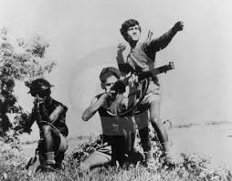
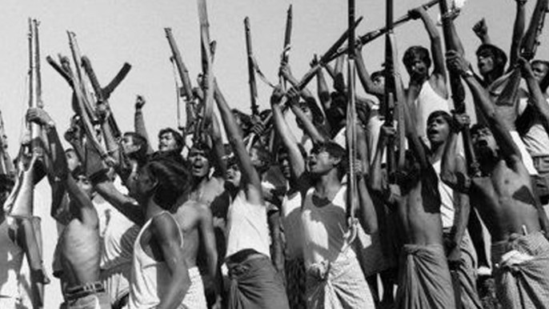

Declaration of Independence
Official announcement of Bangladesh’s independence.
Date: March 26, 1971 | Source: Government Records
Read More
Mujibnagar Government Proclamation
Formation of the first provisional government.
Date: April 17, 1971 | Source: Archives
Read More
Official Surrender Document
The surrender document signed on December 16, 1971.
Date: December 16, 1971 | Source: Military Records
Read More

Six-Point Movement Document
A crucial demand for Bangladesh's autonomy.
Date: 1966 | Source: Political Records
Read More